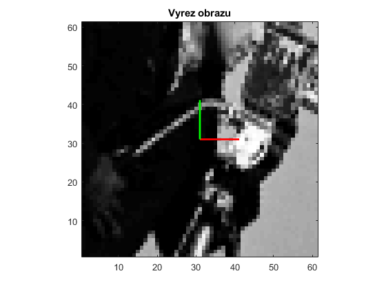

Contents
- G = gauss(x,sigma)
- D = dgauss(x,sigma)
- out = gaussfilter(in, sigma)
- [gx, gy] = gaussderiv(in, sigma)
- [gxx, gxy, gyy] = gaussderiv2(in, sigma)
- A = affine(x1,y1,x2,y2,x3,y3)
- out = affinetr(in, A, ps, ext)
- out = affinetr(in, A, ps, ext)
G = gauss(x,sigma)
sigma = 6.0;
x = -ceil(3.0*sigma):ceil(3.0*sigma);
G = gauss(x, sigma);
figure;
plot(x, G, x, G, 'rx'); grid on;
title('Gaussian, sigma 6.0');
D = dgauss(x,sigma)
D = dgauss(x, sigma);
figure;
plot(x, D, x, D, 'rx'); grid on;
title('Derivace gaussianu, sigma 6.0');

out = gaussfilter(in, sigma)
in = im2double(imread('cameraman.tif'));
Ifiltr = gaussfilter(in, sigma);
figure;
subplot(1,2,1)
imagesc(in), title('Vstupni obraz'); colormap gray; axis image;
subplot(1,2,2)
imagesc(Ifiltr), title('Vystupni obraz'); colormap gray; axis image;
[gx, gy] = gaussderiv(in, sigma)
[gx, gy] = gaussderiv(in, sigma);
figure;
subplot(1,2,1); imagesc(gx), title('Vystupni obraz gx'); colormap gray; axis image;
subplot(1,2,2); imagesc(gy), title('Vystupni obraz gy'); colormap gray; axis image;
fprintf(1, '%10.7f ', [gx(143,115), gx(138,128), gx(56, 104) gx(30,220) gx(182,65)]); fprintf(1,'\n');
fprintf(1, '%10.7f ', [gy(143,115), gy(138,128), gy(56, 104) gy(30,220) gy(182,65)]); fprintf(1,'\n');
0.0049645 0.0167043 -0.0156758 -0.0012034 0.0002335
0.0131074 0.0133083 -0.0005056 -0.0003406 0.0000888

[gxx, gxy, gyy] = gaussderiv2(in, sigma)
[gxx, gxy, gyy] = gaussderiv2(in, sigma);
figure;
subplot(2,2,1); imagesc(in), title('Vstupni obraz'); colormap gray; axis image;
subplot(2,2,2); imagesc(gxx(6:end-5,6:end-5)), title('Vystupni obraz gxx'); colormap gray; axis image;
subplot(2,2,3); imagesc(gxy(6:end-5,6:end-5)), title('Vystupni obraz gxy'); colormap gray; axis image;
subplot(2,2,4); imagesc(gyy(6:end-5,6:end-5)), title('Vystupni obraz gyy'); colormap gray; axis image;
fprintf(1, '%10.7f ', [gxx(143,115), gxx(138,128), gxx(56, 104) gxx(30,220) gxx(182,65)]); fprintf(1,'\n');
fprintf(1, '%10.7f ', [gxy(143,115), gxy(138,128), gxy(56, 104) gxy(30,220) gxy(182,65)]); fprintf(1,'\n');
fprintf(1, '%10.7f ', [gyy(143,115), gyy(138,128), gyy(56, 104) gyy(30,220) gyy(182,65)]); fprintf(1,'\n');
-0.0057240 0.0034873 0.0040757 -0.0003244 -0.0000904
-0.0009861 -0.0005673 0.0025904 -0.0000249 -0.0000041
-0.0016682 -0.0007039 0.0009980 -0.0003306 -0.0000243
A = affine(x1,y1,x2,y2,x3,y3)
x1 = 120; x3 = 115; x2 = 135;
y1 = 100; y3 = 90; y2 = 95;
A = affine(x1,y1,x2,y2,x3,y3)
A =
15 -5 120
-5 -10 100
0 0 1
out = affinetr(in, A, ps, ext)
tic; out = affinetr(in,A,61,3); toc
figure; imagesc(in), title('Vstupni obraz'); colormap gray; axis image; hold on;
X=[-3 -3 3 3 -3; -3 3 3 -3 -3]; X(3,:)=1; Xt=A*X+1;
p.linewidth=2; line(Xt(1,:),Xt(2,:),p); plot([x1 x2]+1, [y1 y2]+1,'r',p); plot([x1 x3]+1, [y1 y3]+1,'g', p);
figure; imagesc(out), title('Vyrez obrazu'); colormap gray; axis image; axis xy; hold on;
plot([0 1]*61/6+31, [0 0]*61/6+31,'r', p); plot([0 0]*61/6+31, [0 1]*61/6+31,'g', p);
Elapsed time is 0.063415 seconds.

out = affinetr(in, A, ps, ext)
tic; out = affinetr(in,A,61,1); toc
figure; imagesc(in), title('Vstupni obraz'); colormap gray; axis image; hold on;
X=[-1 -1 1 1 -1; -1 1 1 -1 -1]; X(3,:)=1; Xt=A*X+1;
line(Xt(1,:),Xt(2,:),'color','y', p); plot([x1 x2]+1, [y1 y2]+1,'r',p); plot([x1 x3]+1, [y1 y3]+1,'g', p);
figure; imagesc(out), title('Vyrez obrazu'); colormap gray; axis image; axis xy; hold on;
plot([0 1]*61/2+31, [0 0]*61/2+31,'r', p); plot([0 0]*61/2+31, [0 1]*61/2+31,'g', p);
Elapsed time is 0.003222 seconds.